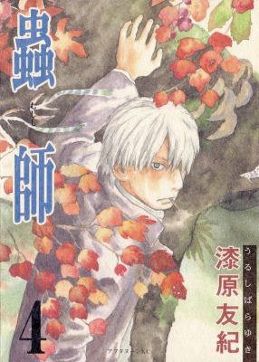

| Quick Facts | |
|---|---|
 | |
| Season: | X |
| Contract: | Buddy Base |
| Contractor: | Mclife |
| Buddy: | HidinNightmares |
| Completed: | 5/10 volumes |
| Format: | Manga |
| Author: | Yuki Urushibara |
| Date: | 1999-2008 |
| Type: | Seinen |
| Genre: | Supernatural, Slice of Life, Health |
| Link: | Anilist |
Welcome to my review about Mushishi ! I only read the first 5 volumes because I kept being distracted from continuing, so I don't have much to say... but I'm sure it will stay constructive anyway. In general, it was a very chill reading, and it was sort of calming for some stories, which I appreciated a lot.
This manga follows the life of Ginko as a mushishi, someone who studies the mushi, but I would rather describe it as a collection of tales that all link to that character. In fact, it's only at the end of the second volume that we learn more about his past, in a very mysterious story.
The graphic style of the manga clearly sets a "traditional" atmosphere, and it is wonderful in all ways: the emotions of characters are easily understood, the nature is described to appear wild and unknown, the details of the drawings makes the atmosphere and temperature tangible. The covers art is also very beautiful, with a watercolor style, that fits very well the classic Japanese vibe of the work.
I would say that even if Ginko is the main character, he is not the main subject of the manga at all. The stories the author wants us to discover is the traditional and supernatural stories he learnt through his relatives, through the inhabitants of those lands that hold a very diverse folklore, and it makes us discover this utterly unknown world in a fabulous point of view of someone trying to understand it.
Eventally, what's important to understand is the hidden life lessons behind those stories. These are lessons of people trying to cure diseases, to live with death, to explain catastrophies, or to improve their future. And those solutions, not always helping them, are viewed through the eye of Ginko, and it makes us think about those matters, how we would act in the situations they face, how difficult would be the choices they made etc.
I think I may have not read enough volumes to get into the heart of this work, and to explore everything it says. I will surely read the following later, but the first volumes didn't really interest me as much as I thought, since there is no real storyline or plot. Surely, the stories are interesting and hold great meanings, yet I can't seem to find the motivation in those short stories. Since I'm still impressed by the details and the quality of the work, I'll rate it with a 6.5/10